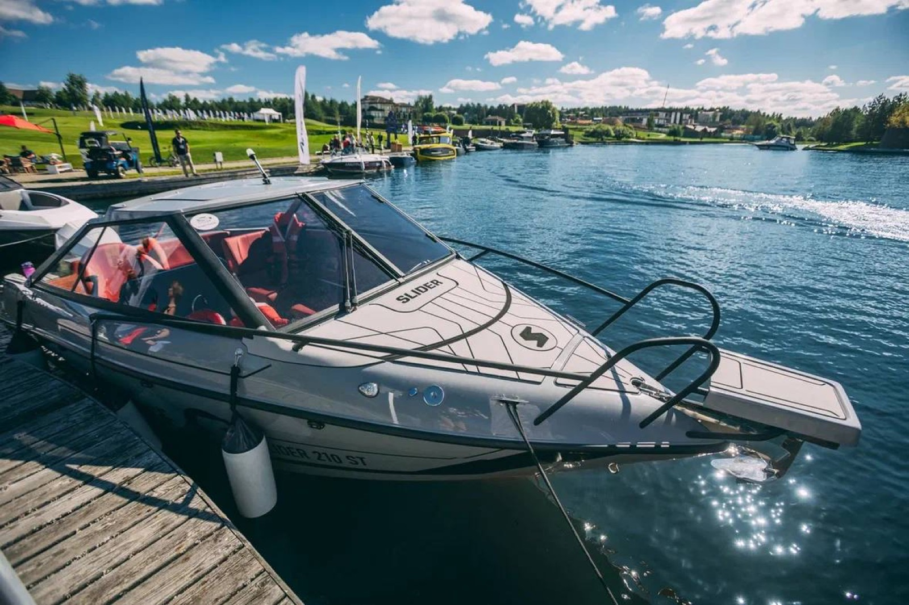

С 5 по 7 сентября верфь Slider приняла участие в выставке катеров и яхт в Завидово - "Яхты и гольф". Это первое подобное мероприятие, объединяющее два элегантных вида отдыха, и стараниями организаторов оно сразу же получило большой потенциал для развития.
Мы представили катер Slider 210 ST, но с учетом того, что многие наши клиенты находятся в Тверской области и изъявили желание прийти по воде, чтобы посетить наш стенд, удалось представить разом и 230-е в разной комплектации, и даже модель Slider 175!
Благодарим организаторов выставки за насыщенные дни и прекрасный фотоотчет с мероприятия!